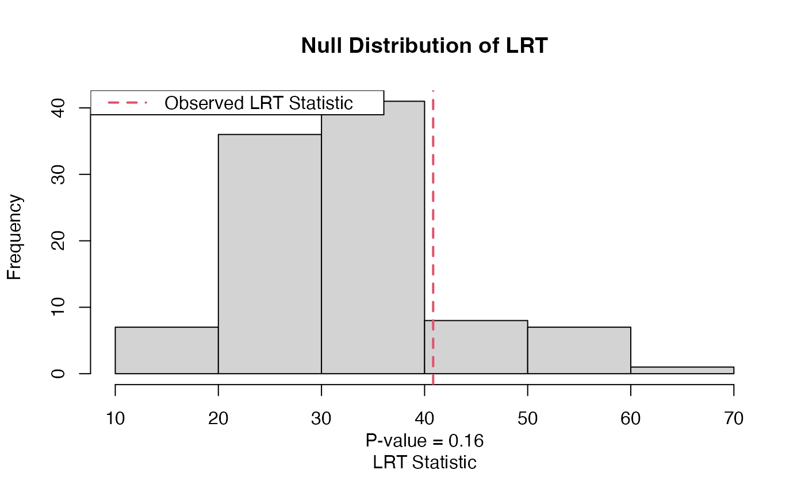

lrt_null_dist_dim_same.RdWhen testing for the covariance structure of modes, this function may be used to draw a sample from the null distribution of the likelihood ratio test stistics, whose distribution doesn't depend on any unknown parameters under the null.
lrt_null_dist_dim_same(p, null_ident = NULL, alt_ident = NULL, null_diag = NULL, alt_diag = NULL, reference_dist = "normal", t_df = NULL, itermax = 100, holq_itermax = 100, holq_tol = 10^-9)
| p | A vector of integers. The dimensions of the array. |
|---|---|
| null_ident | A vector of integers. The modes that under the null have identity covariance. |
| alt_ident | A vector of integers. The modes that under the alternative have the identity covariance. |
| null_diag | A vector of integers. The modes that under the null have diagonal covariance. |
| alt_diag | A vector of integers. The modes that under the alternative have diagonal covariance. |
| reference_dist | Two options are supported, 'normal' and 't'. If 't' is
specified, you have to specify |
| t_df | A numeric. If |
| itermax | An integer. The number of draws from the null distribution of the likelihood ratio test statistic that is to be performed. |
| holq_itermax | An integer. The maximum number of block coordinate ascent iterations to perform when calculating the MLE at each step. |
| holq_tol | A numeric. The stopping criterion when calculating the MLE. |
A vector of draws from the null distribution of the likelihood ratio test statistic.
Let \(vec(X)\) be \(N(0,\Sigma)\). Given two nested hypotheses, $$H_1: \Sigma = \Psi_K\otimes\cdots\otimes\Psi_1$$ versus $$H_0: \Sigma = \Omega_K\otimes\cdots\otimes\Omega_1,$$ this function will draw from the null distribution of the likelihood ratio test statistic. The possible options are that \(\Psi_i\) or \(\Omega_i\) are the identity matrix, a diagonal matrix, or any positive definite matrix. By default, it's assumed that these matrices are any positive definite matrix.
Unfortunately, this fuction does not support testing for the hypothesis of modeling the covariance between two modes with a single covariance matrix. I might code this up in later versions.
Gerard, D., & Hoff, P. (2016). A higher-order LQ decomposition for separable covariance models. Linear Algebra and its Applications, 505, 57-84. https://doi.org/10.1016/j.laa.2016.04.033 http://arxiv.org/pdf/1410.1094v1.pdf
lrt_stat for calculating the likelihood ratio test
statistic.
#Test for all identity versus all unconstrained. p = c(4,4,4) null1 <- lrt_null_dist_dim_same(p,null_ident = 1:3)#> 20.87708 #> 42.97093 #> 24.45691 #> 37.25748 #> 27.72659 #> 20.51107 #> 24.77304 #> 38.65895 #> 32.00571 #> 18.61337 #> 14.98637 #> 23.72652 #> 31.09857 #> 35.17647 #> 22.43369 #> 22.77949 #> 29.59269 #> 30.14337 #> 31.77138 #> 25.0491 #> 30.65232 #> 29.5572 #> 41.51718 #> 47.5166 #> 38.78984 #> 28.39843 #> 27.58529 #> 36.10243 #> 36.50445 #> 30.14442 #> 34.0168 #> 37.32833 #> 28.16156 #> 43.42048 #> 33.53211 #> 52.09356 #> 30.77308 #> 15.2078 #> 18.66857 #> 41.33754 #> 24.45553 #> 39.15742 #> 42.938 #> 33.72351 #> 40.34676 #> 35.22164 #> 24.81506 #> 23.41654 #> 43.2898 #> 29.6436 #> 20.63419 #> 33.10362 #> 24.48022 #> 26.06865 #> 28.79797 #> 39.40933 #> 21.78205 #> 25.88274 #> 17.53275 #> 44.8425 #> 31.41898 #> 22.73442 #> 29.55963 #> 44.04337 #> 19.96971 #> 36.12932 #> 34.27138 #> 25.77123 #> 26.02241 #> 17.65936 #> 28.1581 #> 30.51548 #> 30.79269 #> 31.16047 #> 37.98797 #> 20.11224 #> 41.23337 #> 27.82265 #> 19.62865 #> 33.12003 #> 26.68412 #> 30.18996 #> 32.84567 #> 28.36807 #> 12.87511 #> 27.09577 #> 35.89033 #> 30.1946 #> 29.2019 #> 16.3019 #> 36.02155 #> 24.39918 #> 35.33612 #> 33.49874 #> 31.71802 #> 30.45668 #> 26.97042 #> 36.03679 #> 33.36375 #> 30.27555#Generate Null Data X <- array(stats::rnorm(prod(p)), dim = p) sig_null <- holq(X, mode_rep = 1:3)$sig#> Scale Diff = 0 #> Scale = 6.946776 #>#> Scale Diff = 0.2109307 #> Scale = 5.736725 #> #> Scale Diff = 0.03285653 #> Scale = 5.554232 #> #> Scale Diff = 0.01366805 #> Scale = 5.47934 #> #> Scale Diff = 0.008045138 #> Scale = 5.43561 #> #> Scale Diff = 0.004768842 #> Scale = 5.409811 #> #> Scale Diff = 0.002819331 #> Scale = 5.394602 #> #> Scale Diff = 0.001647928 #> Scale = 5.385727 #> #> Scale Diff = 0.0009469709 #> Scale = 5.380631 #> #> Scale Diff = 0.0005348811 #> Scale = 5.377755 #> #> Scale Diff = 0.0002979086 #> Scale = 5.376153 #> #> Scale Diff = 0.0001642065 #> Scale = 5.375271 #> #> Scale Diff = 8.980397e-05 #> Scale = 5.374788 #> #> Scale Diff = 4.878878e-05 #> Scale = 5.374526 #> #> Scale Diff = 2.63331e-05 #> Scale = 5.374384 #> #> Scale Diff = 1.411151e-05 #> Scale = 5.374308 #> #> Scale Diff = 7.500962e-06 #> Scale = 5.374268 #> #> Scale Diff = 3.950735e-06 #> Scale = 5.374247 #> #> Scale Diff = 2.059811e-06 #> Scale = 5.374236 #> #> Scale Diff = 1.062163e-06 #> Scale = 5.37423 #> #> Scale Diff = 5.413213e-07 #> Scale = 5.374227 #> #> Scale Diff = 2.724953e-07 #> Scale = 5.374226 #> #> Scale Diff = 1.354206e-07 #> Scale = 5.374225 #> #> Scale Diff = 6.641183e-08 #> Scale = 5.374225 #> #> Scale Diff = 3.212749e-08 #> Scale = 5.374224 #> #> Scale Diff = 1.532623e-08 #> Scale = 5.374224 #> #> Scale Diff = 7.207832e-09 #> Scale = 5.374224 #> #> Scale Diff = 3.341297e-09 #> Scale = 5.374224 #> #> Scale Diff = 1.526808e-09 #> Scale = 5.374224 #> #> Scale Diff = 6.880008e-10 #> Scale = 5.374224 #>lrt_x <- lrt_stat(sig_null, sig_alt, p = p) p_value <- mean(null1 > lrt_x) hist(null1,main = 'Null Distribution of LRT', xlab = 'LRT Statistic')abline(v = lrt_x, lty = 2, col = 2, lwd = 2)legend('topleft', 'Observed LRT Statistic', lty = 2, col = 2, lwd = 2)mtext(side = 1, paste('P-value = ', round(p_value, digits = 2), sep = ''), line = 2)#------------------------------------------------------------------------- #Test for all identity versus all mode 1 identity, # mode 2 diagonal, mode 3 unconstrained. p = c(4,4,4) null2 <- lrt_null_dist_dim_same(p,null_ident = 1:3, alt_ident = 1, alt_diag = 2)#> 5.557515 #> 9.684241 #> 9.273346 #> 8.942634 #> 15.9843 #> 18.57618 #> 20.6492 #> 13.85088 #> 5.421416 #> 10.33058 #> 17.69944 #> 6.584919 #> 4.905708 #> 15.50869 #> 11.28552 #> 16.67113 #> 12.78978 #> 7.667997 #> 10.23437 #> 18.45914 #> 11.37955 #> 11.77094 #> 14.79588 #> 7.088658 #> 5.961241 #> 16.3404 #> 19.97789 #> 14.60752 #> 6.659357 #> 22.78097 #> 23.51722 #> 6.489355 #> 19.03213 #> 17.01097 #> 24.37963 #> 15.78529 #> 14.01208 #> 7.139312 #> 19.84324 #> 10.72194 #> 15.28552 #> 10.117 #> 10.82291 #> 11.79914 #> 6.933846 #> 4.946451 #> 6.687066 #> 6.74131 #> 13.07723 #> 11.85563 #> 7.388865 #> 15.23875 #> 16.72449 #> 12.64156 #> 16.04895 #> 23.65443 #> 17.76013 #> 16.06955 #> 9.586353 #> 15.04516 #> 15.83301 #> 17.20314 #> 9.120378 #> 7.216668 #> 16.14547 #> 14.4321 #> 19.04209 #> 9.947866 #> 7.689852 #> 17.27503 #> 7.738723 #> 6.771223 #> 5.991527 #> 9.872 #> 7.970327 #> 15.01547 #> 7.518079 #> 13.81083 #> 16.83132 #> 15.46983 #> 8.626291 #> 14.09194 #> 18.35597 #> 15.14077 #> 9.183202 #> 9.106238 #> 6.086927 #> 21.17576 #> 14.73224 #> 7.30201 #> 17.51109 #> 13.84312 #> 8.494421 #> 7.685381 #> 6.015638 #> 13.57913 #> 15.24527 #> 18.2281 #> 10.25829 #> 3.904493#Generate Null Data X <- array(stats::rnorm(prod(p)), dim = p) sig_null <- holq(X, mode_rep = 1:3)$sig#> Scale Diff = 0 #> Scale = 8.141438 #>#> Scale Diff = 0.03517942 #> Scale = 7.86476 #> #> Scale Diff = 0.0007181446 #> Scale = 7.859116 #> #> Scale Diff = 7.452453e-05 #> Scale = 7.85853 #> #> Scale Diff = 9.139197e-06 #> Scale = 7.858459 #> #> Scale Diff = 1.150338e-06 #> Scale = 7.85845 #> #> Scale Diff = 1.455226e-07 #> Scale = 7.858448 #> #> Scale Diff = 1.843222e-08 #> Scale = 7.858448 #> #> Scale Diff = 2.335496e-09 #> Scale = 7.858448 #> #> Scale Diff = 2.959557e-10 #> Scale = 7.858448 #>lrt_x <- lrt_stat(sig_null, sig_alt, p = p) p_value <- mean(null2 > lrt_x) hist(null2,main = 'Null Distribution of LRT', xlab = 'LRT Statistic')abline(v = lrt_x, lty = 2, col = 2, lwd = 2)legend('topleft', 'Observed LRT Statistic', lty = 2, col = 2, lwd = 2)mtext(side = 1, paste('P-value = ', round(p_value, digits = 2), sep = ''), line = 2)